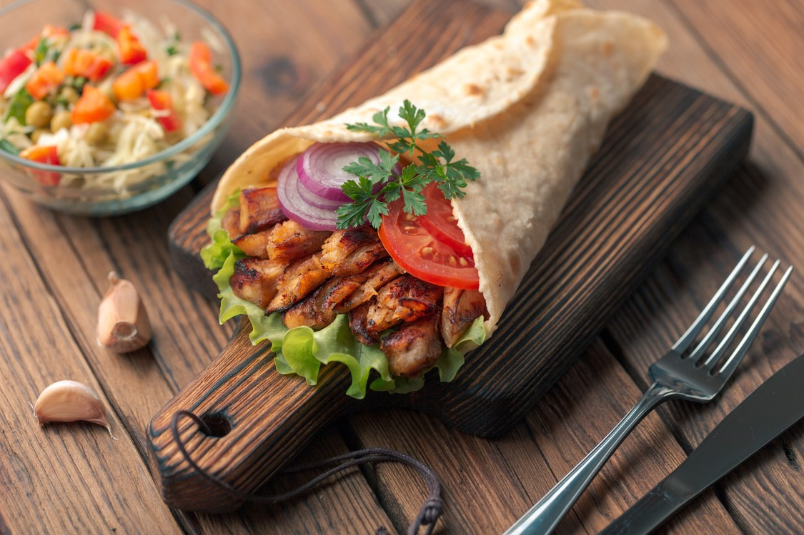
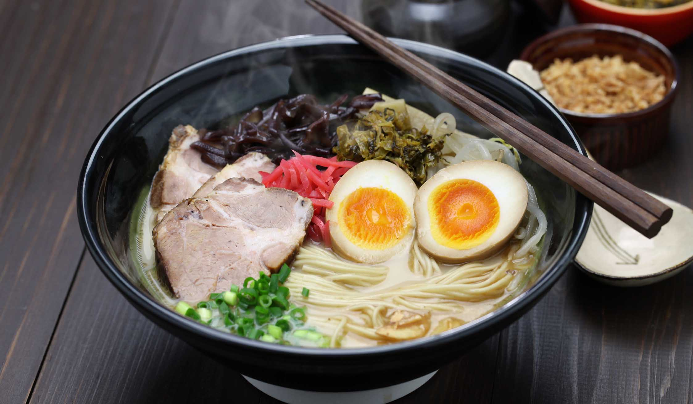
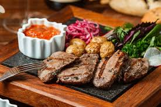
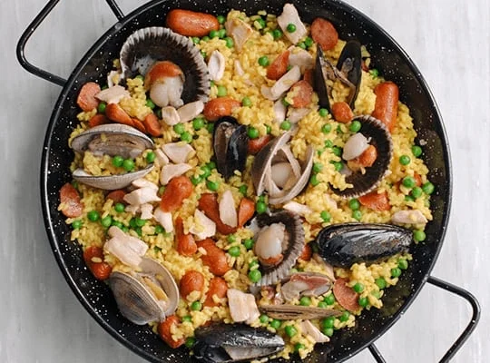
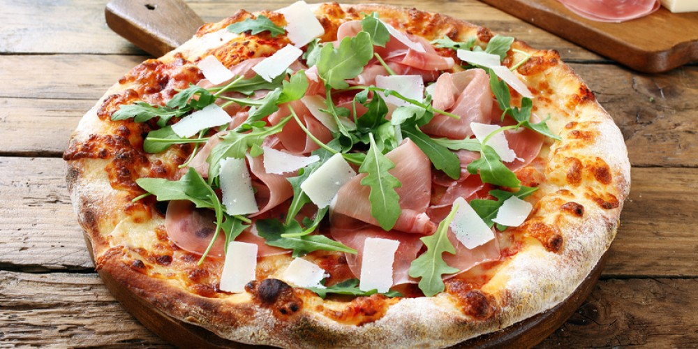

|  |
 |
 |
| Shawarma |
Ramen |
Sushi
|
| Es un platillo de origen levantino que se ha popularizado en muchas partes del mundo. |
Es una sopa japonesa de fideos en caldo, se acompaña con carne, huevos, algas y vegetales. |
Consiste en arroz aderezado con vinagre, acompañado de pescado crudo, mariscos y vegetales. |
 |
 |
 |
| Tacos |
Churrasco |
Arepas |
| Son un platillo mexicano hecho de una tortilla de maíz o harina, rellena con carne, pollo, pescado o vegetales. |
Se cocina a la parrilla y se sirve con chimichurri y otros acompañamientos. |
Es un platillo tradicional de Venezuela y Colombia, hechas de masa de maíz y cocidas a la plancha. |
|  |
 |
 |
| Paella |
Fish and Chips |
Pizza |
| Se elabora con arroz, azafrán, y una mezcla de mariscos, pollo, conejo, y vegetales. |
Platillo británico que consiste en pescado empanizado y frito, acompañado de papas fritas. |
Consiste en una base de masa de pan cubierta con salsa de tomate, queso y diversos ingredientes como jamón. |